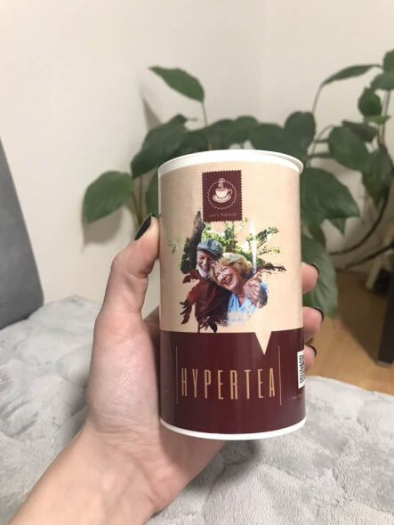
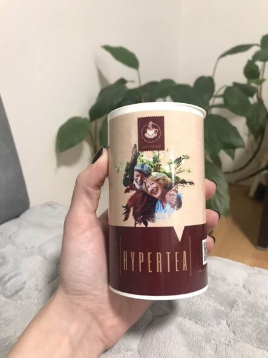
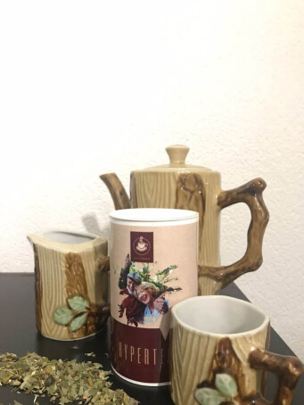

“Postoji samo jedan način za liječenje hipertenzije i bolesti srca!” 85-godišnji kardiolog iz Srbije otkrio je tajnu svoje dugovječnosti i odličnog zdravlja
Veliki intervju sa poznatim hrvatskim kardiologom i profesorom Aleksandrom Šimićem. Prije 15 godina otišao je u mirovinu, ali nastavlja liječničku praksu. Među njegovim pacijentima su slavne osobe u zemlji, poznate ličnosti i političari. Aleksandar Šimić zna tajnu kako da se umirovljenici i hipertoničari osjećaju 20 godina mlađe i održavaju odlično stanje kardiovaskularnog sustava.
“Čišćenje krvnih žila u kućnim uslovima ne samo da normalizira krvni tlak, već i produljuje život umirovljenika za 12-17 godina.”
Novinar: Dobar dan! Hvala što ste pristali na razgovor! Vi ste pravi ponos zemlje! U svakoj svojoj prezentaciji govorite da je čišćenje krvnih žila jedini način da se riješite hipertenzije i srodnih bolesti. Reci nam nešto više.
Aleksandar Šimić: Dobar dan! Znate, uvijek sam gledao djecu i razmišljao zašto se bolesti srca i krvnih žila javljaju tek u starijoj dobi? Što je to u životu djece, a da umirovljenici nemaju? Odgovor je bio jednostavan, ali genialan. Tijekom cijelog života kolesterol se taloži na stjenkama naših krvnih žila. Pušenje, nezdrava prehrana, loš okoliš, neaktivan način života. Djeca imaju kristalno čiste krvne žile, ali s godinama njihov se lumen puni lipidima, kolesterolom i toksinima. Stoga stariji ljudi često obolijevaju. To se događa u 98 od 100 slučajeva.
Počeo sam detaljnije proučavati ovo pitanje. Ispostavilo se da su još 1985. godine američki znanstvenici dokazali da su naslage kolesterola unutar krvnih žila GLAVNI UZROK HIPERTENZIJE. Samo zamislite! Više od 100.000 Hrvata umrijet će 2023. godine od kardiovaskularnih bolesti, prognoza je Ministarstva zdravlja. Visok krvni tlak, začepljene arterije i bolesno srce dovode do rane smrti. To se može izbjeći čišćenjem krvnih žila!

U potpunosti sam siguran da svatko može kod kuće provesti terapijsko čišćenje krvnih žila i izliječiti ne samo hipertenziju, već i 6 popratnih bolesti. A TO JE DO 20 GODINA ŽIVOTA DODATNO.
Novinar: Čišćenjem krvnih žila riješit ćete se 7 bolesti? To je nevjerojatno!
Aleksandar Šimić: Točno! To sam testirao na sebi i stotinama svojih pacijenata. Zbog začepljenih krvnih žila, pate apsolutno svi organi. Ako su krvne žile u nogama začepljene, to dovodi do proširenih vena, trajnog oticanja i stalnog osjećaja težine u nogama. Ako postoji blokada u jetri, tada dolazi do hepatoze i ciroze. Ako je u zglobovima, javlja se artritis, artroza ili bol u kralježnici. Ako se krvne žile u očima začepe, osoba polako gubi vid.
Ovo je samo dio popisa bolesti koje se mogu eliminirati čišćenjem krvnih žila:
- Hipertenzija. Kao što sam rekao, krv ne može ulaziti u organe zbog uskog lumena u krvnim žilama.
- Moždani udar. Žile u mozgu su začepljene ili puknute. Opskrba krvlju moždanih hemisfera je poremećena, neuroni gladuju i umiru.
- Ateroskleroza. Kada količina kolesterola znatno premaši normu, u stjenci krvnog suda nastaje aterosklerotski plak. Kretanje krvi prema organima može biti zaustavljeno u bilo kojem trenutku, što uzrokuje preranu smrt.
- Srčani udar. Najčešća posljedica uznapredovale ateroskleroze.
“Bolesti srca i krvnih žila su ozbiljna opasnost. Ako niste čistili krvne žile, tada su u dobi od 50 godina one 50-60% začepljene.
Aleksandar Šimić: Pogledajte kakvu opasnost predstavljaju začepljene krvne žile. Molimo one sa slabim srcem ne gledajte fotografije, ali one pokazuju samo istinu.
Arterije se pune kolesterolom i više ne mogu prenositi krv.
Na slici, zadebljanje stijenke krvne žile, nastalo kao rezultat taloženje kolesterola u lumenu arterije, drugim riječima, aterosklerotski plak.
Veličina kolesterolskih plakova prije i poslije čišćenja krvnih žila.
Začepljenje krvnih žila uništava čovjeka! Javlja se ishemija – potpuni prekid opskrbe organa krvlju. Ishemijski moždani udar je začepljenje cerebralne krvne žile. Srčani udar je začepljenje srčane arterije. Ishemija jetre, kolaps pluća, zatajenje bubrega. Hemoroidi su ishemija rektuma. Čak i začepljenje malih žila nogu na kraju dovodi do nekroze - gangrene.
“Odmah se provjerite. Upravo sada možete započeti s liječenjem i spasiti si život!”
Novinar: Postoje li neki simptomi po kojima možete shvatiti da je potrebno hitno čišćenje žila?
Aleksandar Šimić: Nedvojbeno. Možete napraviti samodijagnozu u kućnim uvjetima. Ako pronađete 1-2 simptoma, znajte da vam je hitno potrebno čišćenje. Već nakon prvog postupka primijetit ćete poboljšanja svoga stanja.
- Vrtoglavica i glavobolje;
- Osjećaj pulsiranja u različitim dijelovima tijela, kao što su stražnji dio glave i sljepoočnice;
- Osjećaj "magle u glavi";
- Smanjena oštrina vida;
- Buka u ušima i čujnost otkucaja srca;
- Nesanica i umor;
- Gubitak apetita i mučnina;
- Pritiskajući bolovi u prsima;
- Kratkoća daha u mirovanju i tijekom laganog fizičkog napora;
- Pojačano znojenje.
- Višak kilograma.
Novinar: A sad nam recite kako vi čistite krvne žile.
Aleksandar Šimić: Sada ću vam reći što učiniti ako ste samo osoba koja pati od kardiovaskularnih bolesti, ali liječnici vam ne mogu pomoći. Postoji samo jedna tvar koja pokreće čišćenje krvnih žila. To su AKTIVNE MOLEKULE KISIKA. Ova tvar radi poput usisavača: skuplja kolesterol i opasne naslage u svojevrsnu vrećicu te ga krvotokom prenosi do bubrega, odakle izlučuju napolje. Trenutno se aktivne molekule kisika nalaze u samo jednom preparatu. To je čaj Hypertea.
“Nakon 1-2 mjeseca uzimanja Hypertea, samo 5% kolesterola će ostati u krvnim žilama, što ni na koji način ne utječe na vaše stanje.”
Aleksandar Šimić: Proizvod ima doista jedinstvenu formulu. Aktivne molekule kisika u sastavu mogu "pojesti" nečistoće nakupljene u krvnim žilama, krvne ugruške i kristale kalcija. Zbog toga se smanjuje oksidativno oštećenje, produljuje životni vijek, nestaju kognitivna oštećenja i žarišne lezije u stanicama.
Evo, pogledajte. To su službeni podaci Ministarstva zdravlja Hrvatske. Objavljeni su na stranici, samo nitko o njima ne govori! To je neisplativo, jer je farmaceutika posao vrijedan više milijardi dolara!
Rezultati testiranja prirodnog čaja Hypertea na osnovu proučavanja ličnih medicinskih kartona 5.896 pacijenata Kliničkog centra Hrvatske u Zagrebu:
- 87% pacijenata potpuno se riješilo problema s krvnim tlakom i kardiovaskularnih bolesti u 60 dana;
- 96% pacijenata potpuno je očistilo krvne žile i prevladalo sve rizike od kardiovaskularnih bolesti.
- Normalizirani otkucaji srca, poboljšano cjelokupno zdravlje bez nuspojava tijekom liječenja – 92% pacijenata.
Hypertea je kompleksan učinak na organizam. Za 2 mjeseca prijema vraća se elastičnost krvnih žila, poboljšava se metabolizam, stanje hrskavičnog tkiva, vid i pamćenje. Ovo je zamjena za desetke sintetičkih preparata za umirovljenike. Imam 85 godina. Uzimam proizvod nekoliko godina i osjećam se kao da mi je najviše 55 godina. Želim živjeti dug, ispunjen život bez boli!
“Mirovina ne dopušta kupnju skupih lijekova. Možete postati zdravi i sretni za malu cijenu.
Novinar: Koliko znamo, Hypertea je teško naći u ljekarnama u Hrvatskoj.
Aleksandar Šimić: Da, to je istina. Htio sam masovno prodavati Hypertea u svim ljekarnama u zemlji, ali nismo uspjeli. Svaka od ljekarni također zarađuje na lijekovima, pa su pristali prodavati proizvod samo s povećanjem od 5 puta. To je jednostavno nezamislivo. Nijedna mirovina neće omogućiti da ovaj lijek dobijete po velikoj cijeni, a ja želim da čaj Hypertea bude u svakom domu u kojem živi osoba starija od 50 godina.
Stoga predlažem sudjelovanje u online zdravstvenom programu „STOP HYPERTENZIJA“. Ovdje nema preprodaje ili neopravdanog povećanja cijene! Osobno sam kontaktirao proizvođače u Švedskoj kako bih pomogao ljudima kojima je to potrebno.
Za kupnju Čaja Hypertea potrebno je ispuniti niz uvjeta:
- Morate se nalaziti na teritoriju Hrvatske. Ne šaljemo čaj Hypertea izvan zemlje.
- Čaj Hypertea možete naručiti ISKLJUČIVO ZA OSOBNU UPOTREBU. Ne prodajemo ljekarnama i trgovačkim organizacijama. Ne možete profitirati na problemima umirovljenika.
- Službeni obrazac za kupnju lijeka možete ispuniti upravo sada. Trebate navesti telefonski broj za kontaktiranje liječnika konzultanta koji će vam pomoći da razvijete personaliziranu strategiju liječenja hipertenzije.
Za sudjelovanje u našem programu potrebno je ostaviti svoje podatke na obrascu ispod i dobiti proizvod sa popustom (ako je još dostupan).
Novinar: Hvala vam na ovako korisnom razgovoru.
Aleksandar Šimić: Jesam li vas uvjerio da će čaj Hypertea učiniti vaš život dužim, zdravijim i bogatijim? Tada je vrijeme da preuzmete odgovornost za sebe i svoje zdravlje. Ne znam koliko će naš program trajati. Ali želim vas upozoriti da nije ostalo mnogo pakovanja. Svakim danom sve je više narudžbi. Usmena metoda funkcionira, ljudi jedni drugima prenose informacije, savjetuju prijatelje, naručuju čaj za voljene. Nismo očekivali da će se informacija o čaju Hypertea tako brzo proširiti Hrvatskom. No, vrlo je ohrabrujuće da će toliko ljudi uspjeti pobijediti hipertenziju.
Urednički komentar: Zbog velikog broja narudžbi i smanjenja količine proizvoda potrebno je ograničiti trajanje programa! Zdravstveni program “STOP HIPERTENZIJA” završava zaključno sa 22.12.2022. godine! Požurite kupiti ostatke zaliha Hypertea uz 50% popusta putem službene narudžbenice koju je postavio Aleksandar Šimić.
5 pakovanja
-
 ValerijaOdličan čaj, djeluje kod hipertenzije! Moj suprug već godinama pije tablete koje normaliziraju tlak, ali to je kemija s hrpom nuspojava. Ovaj čaj je pravo čudo, odmah je normalizirao tlak! Definitivno ću kupiti više i ponavljati tečajeve. Preporučam!
ValerijaOdličan čaj, djeluje kod hipertenzije! Moj suprug već godinama pije tablete koje normaliziraju tlak, ali to je kemija s hrpom nuspojava. Ovaj čaj je pravo čudo, odmah je normalizirao tlak! Definitivno ću kupiti više i ponavljati tečajeve. Preporučam! -
Vito6usProizvod je došao brzo, tlak se održava bez kolebanja, hvala liječniku. Usput, čaj je ukusan.
-
Katarina ReykoooHvala vam što ste umirovljenicima pružili tako divnu priliku! Naručila sam Hypertea. Prije sam imala visok tlak, a sada mi tlak uopće ne raste. Prije sam stalno imala glavobolje, sada više nema tih problema. Glavobolja je nestala. Gorčina u mojim ustima je nestala. I mnogo toga se promijenilo na bolje. Čini mi se da sam se pomladila!
LilaI ja sam imala problema sa srcem i disanjem, da sam prije znala da je to sve zbog hipertenzije.
-
Slavica123904858Dugo sam tražila. Vrlo sam zadovoljna. Uzimati ću u tečajevima. Sastav je odličan, uvijek ga provjeravam jer sam radila kao farmaceut. Ovdje uopće nema pritužbi na sastav, za hipertoničare to je pravi božji dar! Savjetujem!
-
NenadPravovremena Dostava, odlično zapakirano, sve je došlo savršeno, nakon uzimanja preparata svakako ću napisati komentar.
-
Mira LopusEto što su liječnici u Švedskoj. Pravi profesionalci, još i nama pomažu! Samo da tako nastave!!!
-
LidijaŽelim potvrditi - lijek je pravo čudo!!! Kupila sam Hypertea, kako je bilo napisano, prema programu od liječnika. Imala sam pritisak, skoro svaku večer glava me boljela toliko da sam poludjela, čak ni tablete protiv bolova nisu pomagale. Mada sam kasnije saznala da me glava boli radi visokog tlaka. Općenito, ovaj čaj mi je preporučio školski prijatelj, pa sam ga uspjela kupiti sa popustom. Bila sam jako zadovoljna. Nakon 2 mjeseca već sam bila druga osoba. Shvatila sam da, prije nego što su očistile krvne žile, gotovo nisam živjela! Više me ne boli glava, moji bolovi u prsima su nestali i NAJVAŽNIJE - SMRŠAVILA SAM 20 KG! Od 94 kg do 74 kg. Eto što znači normalizacija krvotoka
LjubomirVau, žurim da što prije naručim, jer izgleda da imam sve simptome koje imaš i ti. Umoran sam od traženja spasa po bolnicama. Inspirirali ste me.
-
ŠtefanMoj susjed iz vikendice često se žalio na svoje zdravlje zbog raznih bolesti, bilo želučanih ili srčanih. Ali u posljednjih mjesec dana vidim da je aktivan i veseo, oživio. Rekao je da je pio čaj Hypertea. Ima 72 godine.